WELCOME
TO
TRAVELER'S BLOG
6 Unseen Landmark in Phetchaburi

6 Unseen แลนมาร์คในเมืองเก่าริมน้ำ จ.เพชรบุรี
6 Unseen แลนมาร์คในเมืองเก่าริมน้ำ จ.เพชรบุรี
เที่ยว กิน เล่น ครบ ใครจะไปรู้ว่าจุดเช็คอินสุดว๊าวว จะซ่อนอยู่ในชุมชนแบบนี้
🕯 วัดเกาะ
🏆บ้านช่างทอง ป้าเนื่อง
🍦ช้อปขนมโบราณที่ตลาดริมน้ำเมืองเพชร
📸ถ่ายรูปกับสตรีทอาร์ต กลางตลาด ชิคๆ
🍉Walking Street เมืองเพชรของกินเพียบเด็ดทุกร้าน
☕ร้านระเบียงริมน้ำ ตามรอย ‘สิ่งเล็กๆ ที่เรียกว่ารัก’
🌟วัดมหาธาตุวรวิหาร
#กรมส่งเสริมวัฒนธรรม #ชุมชนท่องเที่ยวเชิงวัฒนธรรมประจำปี2561 #ชุมชนท่องเที่ยวเชิงวัฒนธรรม #BloggerCulture #BloggerXDCP
ที่นี่จะมีอยู่3 ชุมชนด้วยกัน ชุมชนวัดเกาะ ชุมชนซอยตลาดริมน้ำเพชรบุรี แล้วก็ชุมชนคลองกระแชง
ชุมชนวัดเกาะ
ชุมชนวัดเกาะเป็นชุมชนเก่าแก่ ผสมผสานไทย-จีน วัดวาอาราม ศาลเจ้า โรงเจ สถาปัตยกรรมเก่าแก่หลายยุคหลายสมัยหาได้ที่นี่เท่านั้นเลยค่ะ ถัดมา ชุมชนซอยตลาดริมน้ำเพชรบุรี เป็นเรือนแถวแบบเก่า ขายขนมเก่าปนใหม่ ขนมไทยโบราณหายากๆมาที่นี่มีหมดค่ะ ระหว่างทางเดินในตลาด เค้าก็มีภาพ Street Art ให้เด็กรุ่นใหม่มาโชว์ฝีมือกัน กลายเป็นจุดถ่ายรูปเก๋ๆกลางตลาดไปเล้ยย และชุมชนสุดท้ายคือชุมชนคลองกระแชง เป็นย่านเก่าที่มีความโมเดิร์นผสมปนเปเข้าไปด้วย ร้านอาหาร/คาเฟ่น่ารักๆที่มีกลิ่นอายความเป็นดั้งเดิม ลองเดินเล่นดูแล้วจะรู้ว่าควรมาจริงๆ
วัดเกาะ หรือ วัดเกาะแก้วสุทธาราม ภายในมีภาพจิตรกรรมฝาผนังเขียนด้วยสีฝุ่น ภาพอลังการทุกด้านโบสถ ไม่ว่าจะเป็นภาพจักรวาลตามคติโบราณ ภาพพุทธประวัติตอนมารผจญ ภาพพุทธประวัติตอนสำคัญต่างๆ สวยและหาดูยากมากๆ
พิกัดบ้านช่างทอง
บ้านช่างทอง ป้าเนื่อง ป้าเนือง เป็น ‘ช่างทองสี่แผ่นดิน’แล้วยังเป็นศิลปินแห่งชาติอีกด้วยค่ะ ป้าเนื่องเพิ่งเสียชีวิตตอนอายุ100ปี 7เดือน 7 วัน งานฝีมือเลยถูกส่งผ่านรุ่นต่อรุ่นมาสู่ลูกหลาน งานวิจิตศิลป์ทุกชิ้นทำด้วยฝีมือปราศจากการใช้เครื่องจักร ปราณีตมากๆ แต่ละชิ้นใช้มือแกะทองล้วนๆ เห็นความปราณีตชัดๆซักครั้งเป็นบุญตา
พิกัด
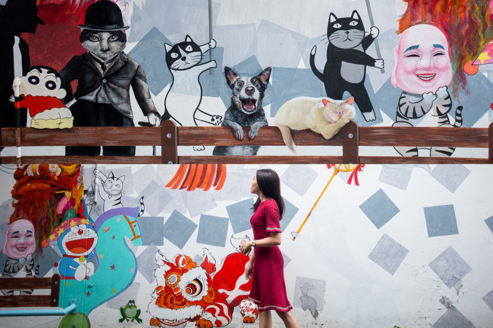
สตรีทอาร์ตกลางตลาด
ถ่ายรูปกับสตรีทอาร์ตกลางตลาด ชิคๆ ใครจะรู้ว่าเมืองเพชรจะมีาพวาดสตรีทอาร์ตเยอะขนาดนี้ มีตั้งแต่ไซส์มินิ ไปถึงจัมโบ้เลยจ้าา ดูน่ารักและลงตัว คนวาดก็จะมีความcreative ซ่อนตามซอกมุมต่างๆของกำแพงตึก เหมือนกำลังล่าสมบัติ ต้องตามเก็บกันหลายจุด
พิกัดWalking Street
Walking Street เมืองเพชรของกินเพียบเด็ดทุกร้าน เด็ดจริงค่ะ ที่ถนนคนเดินเพชรบุรี เดินถนนนี้ลืมหิวเพราะของกินน่ากินตลอดทางจริงๆ ของเค้าดีมากกกก คนชอบกินเนื้อวัวหวรโดนร้านเนื้อย่างเสียบไม้ พร้อมข้าวเหนียวร้อนๆ เดินไปเดินมาต้องย้อนกลับมาซื้อเนื้อร้านนี้กว่า2รอบ ตลาดเปิดตั้งแต่ 4โมงเย็น ถึง สองทุ่มค่ะ
พิกัดร้านระเบียงริมน้ำ
ร้านระเบียงริมน้ำ เดินเลยถนนคนเดินเพชรบุรีมาหน่อยก็จะเจอร้านนี้ซ่อนตัวอยู่ ร้านอาหารที่เหมาะแก่การนั่งชิว ลมเย็น อาหารอร่อย เป็นบ้านเก่าโบราณอยู่ติดริมแม่น้ำเพชร เป็นที่ๆ หนัง ‘สิ่งเล็กๆ ที่เรียกว่ารัก’ ถ่ายทำเป็นบ้านนางเอกค่ะ ร้านจะหายากนิดนึง ต้องจอดรถด้านนอกแล้วเดินมาค่ะ
พิกัดติดต่อสอบถาม
ติดต่อสอบถามเพิ่มเติมได้ที่ ชุมชนท่องเที่ยวเชิงวัฒนธรรมย่านเมืองเก่าริมแม่น้ำเพชรบุรี ตำบลคลองกระแชง อำเภอเมืองเพชรบุรี จังหวัดเพชรบุรี หรือโทรหาคุณพี่ วเจียรไน ทีสุกะ ได้ที่เบอร์ 099-058-5500 เลยค่า #กรมส่งเสริมวัฒนธรรม #ชุมชนท่องเที่ยวเชิงวัฒนธรรมประจำปี2561 #ชุมชนท่องเที่ยวเชิงวัฒนธรรม #BloggerCulture #BloggerXDCP
(form: https://reachandgrab.wordpress.com/2018/08/23/%F0%9F%A7%A1-6-unseen-แลนมาร์คในเมืองเก่า/)เช็คอิน 10 ที่เที่ยวทะเลหมอกหนาวนี้ชวนแฟนไปกอดกัน
ลมหนาวมาเมื่อไร ใจฉันมันสุดเหงา หนาวนี้รีบหาคู่แล้วพากันขึ้นภูไปดูทะเลหมอกกันค่ะ วันนี้เราจะมาแนะนำที่เที่ยวดูทะเลหมอกสวยๆ นั่งรอดูพระอาทิตย์ขึ้นยามเช้าท่ามกลางสายลมหนาว และสำหรับใครที่ต้องการที่พักสุดหรู ในราคาถูกใจ ก็อย่าลืมจองที่พักกับ Traveloka ให้คุณได้ที่พักในราคาสุดพิเศษ ดูทะเลหมอกได้อย่างสบายใจ สบายกระเป๋า
1. ภูชี้ฟ้า เชียงราย
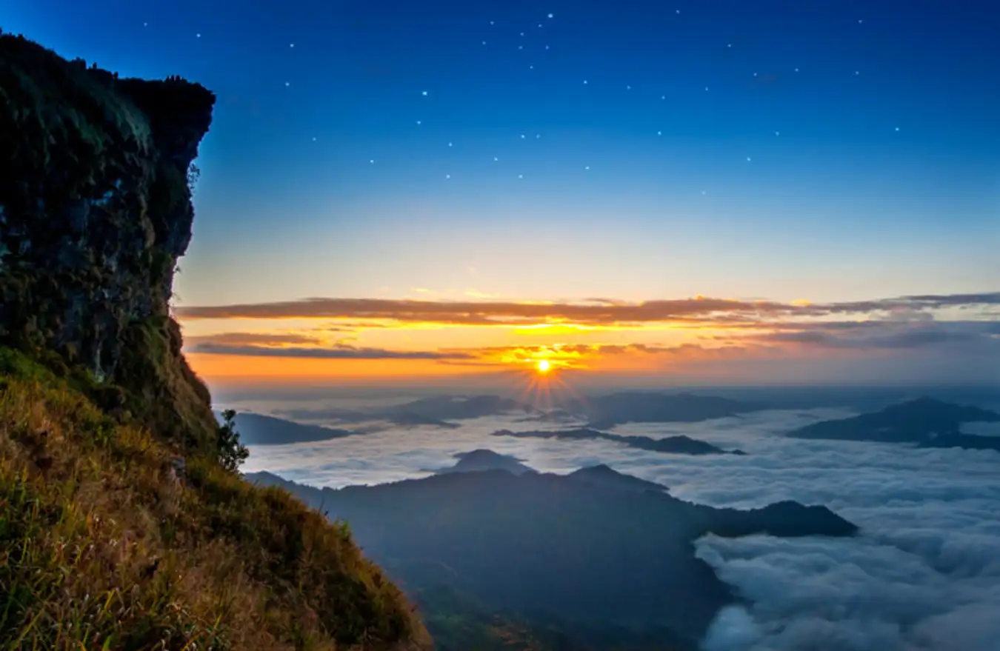 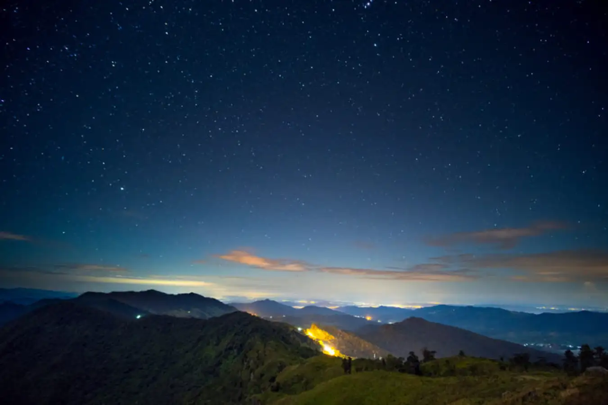คงไม่มีใครไม่รู้จักสถานที่ดูทะเลหมอกยอดฮิตอย่างภูชี้ฟ้า ชะง่อนหินที่ยื่นออกไปจากหน้าผาเป็นแลนด์มาร์คสำคัญที่ทำให้ทุกคนที่ได้เห็นต้องรู้อย่างแน่นอนว่าเป็นที่ไหน ด้วยความสูงจากระดับน้ำทะเลปานกลาง 1,200 - 1,600 เมตร ทำให้มองเห็นทะเลหมอกได้ไกลสุดลูกหูลูกตาเป็นอีกที่ที่จะทำให้คุณพบเจอกับประสบการณ์สุดฟิน
2. ดอยหลวง เชียงดาว เชียงใหม่
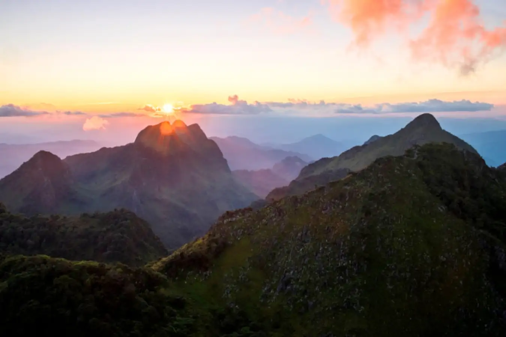สถานที่ดูทะเลหมอก ตั้งเต๊นท์ จิบกาแฟชิลๆ ไปกับบรรยากาศของยอดเขาความสูง 2,225 เมตรจากระดับน้ำทะเลปานกลางแต่แนะนำสำหรับคนที่มีแรงปีนเขาได้แบบไม่ลำบากเพราะทางขึ้นดอยหลวงต้องเดิน เดิน และเดินเท่านั้น ดอยหลวงจะเปิดให้เข้าเฉพาะช่วงหน้าหนาวควรรีเช็คข้อมูลให้ดี แต่วิวท้องฟ้าตอนกลางคืนและทะเลหมอกในช่วงเช้านั้นรับรองว่าสวยประทับใจจนคุณไม่รู้ลืม
3. กิ่วแม่ปาน อุทยานแห่งชาติดอยอินทนนท์ จังหวัดเชียงใหม่
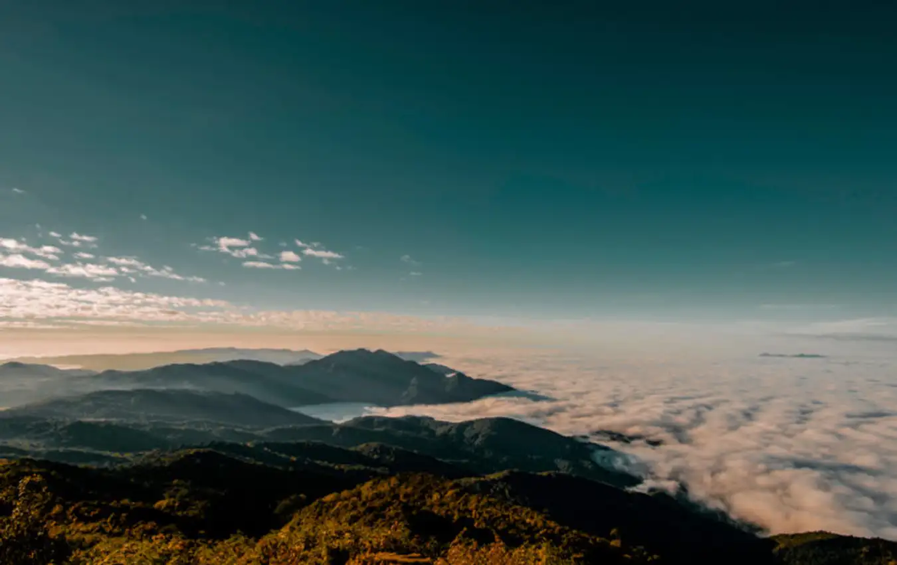 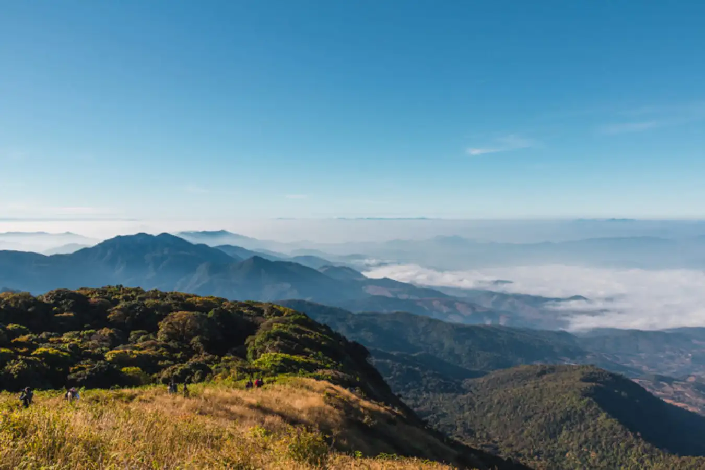สถานที่ถ่ายรูปและดูทะเลหมอกยอดฮิตใครที่เคยเห็นรูปวิวท้องฟ้า สูงจากระดับน้ำทะเลปานกลาง 2,000 เมตร นอกจากจะได้เห็นทะเลหมอกแล้วยังมีสถานที่ท่องเที่ยวบนดอยอินทนนท์ให้แวะตลอดทั้งทางไม่ว่าจะเป็นน้ำตก เส้นทางเดินป่า เอาใจสายธรรมชาติกันสุดๆ
4. ดอยอ่างขาง จังหวัดเชียงใหม่


เป็นสถานีวิจัยการเกษตรที่ตั้งอยู่บนเทือกเขาตะนาวศรี สูงจากระดับน้ำทะเล 1,928 เมตร มีพื้นที่ให้ชมทะเลหมอกหลายจุด และมีอากาศหนาวเย็นตลอดทั้งปี นอกจากจะมีทะเลหมอกให้เที่ยวแล้วยังมีสถานที่ท่องเที่ยวเชิงเกษตรให้อีกหลายจุดให้เที่ยวชมอย่างจุใจ เหมาะสำหรับใครที่หาโลเคชั่นถ่ายรูปที่หลากหลายสวยถูกใจแน่นอน
5. ภูทับเบิก จังหวัดเพชรบูรณ์
ถือเป็นอีกฟนึ่งสถานที่ท่องเที่ยวขึ้นชื่อของจังหวัดเพชรบูรณ์ เป็นยอดเขาที่สูงที่สุดในจังหวัดทำให้ได้รับความนิยมเป็นอย่างมาก นอกจากจะได้ชมความงามของทะเลหมอกแล้ว รอบๆ ภูทับเบิกก็มีคาร์เฟ่ ร้านอาหาร โรงแรมให้แวะเที่ยวได้ตลอดทางอิ่มหนำสำราญทั้งทริปแน่นอน
6. ห้วยน้ำดัง จังหวัดเชียงใหม่
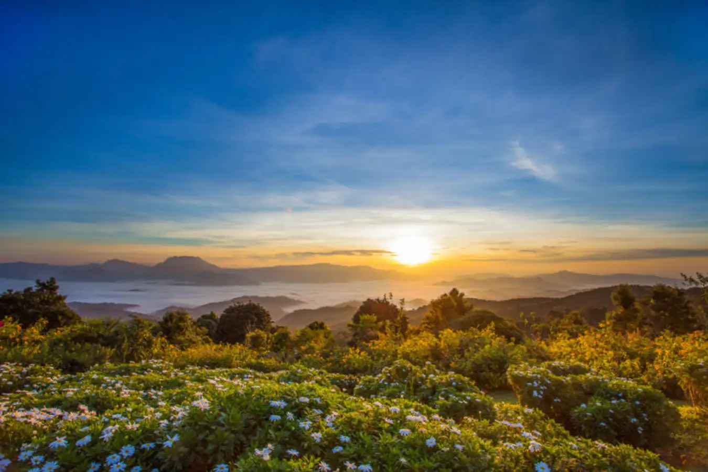 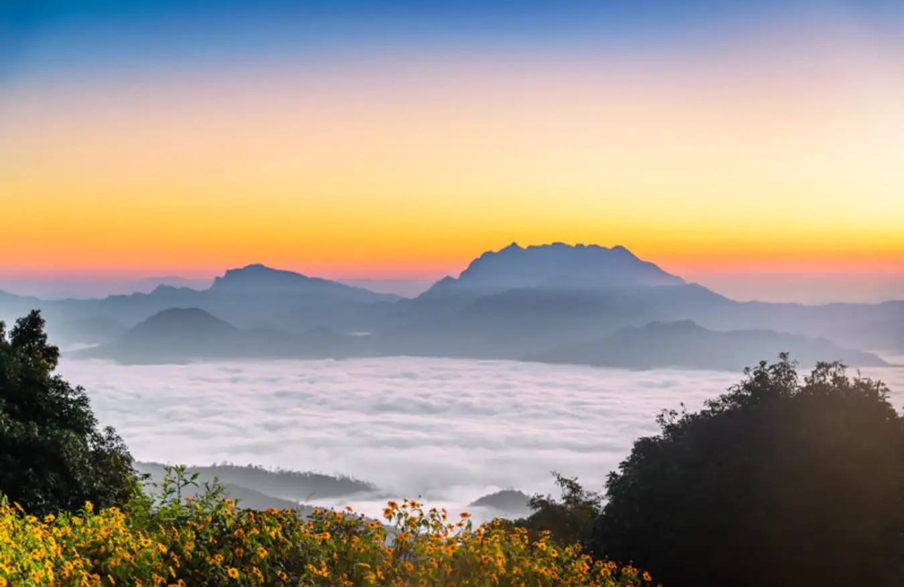อีกสถานที่หนึ่งในจังหวัดเชียงใหม่ที่ขึ้นชื่อ ใครที่อยากสัมผัสอากาศหนาว วิวสวย ๆ สามารถดูทะเลหมอกได้แบบพาโนรามาเราแนะนำที่นี่เลย นอกจากจะมีทะเลหมอกให้ชมแล้วยังมีสวนกาแฟแวะให้เที่ยว ทัศนียภาพจากห้วยน้ำดังจะสามารถมองเห็นดอยหลวงเชียงดาวยาวสุดลูกหูลูกตาน่าถ่ายรูปมากๆ วิวเต็มสิบให้ล้านเลย
7. ดอยเสมอดาว จังหวัดน่าน
จุดชมวิวที่สวยงามที่สุดแห่งหนึ่งของจังหวัดที่รายล้อมไปด้วยขุนเขาอย่างจังหวัดน่าน มีจุดให้ชมทั้งทะเลหมอก พระอาทิตย์ขึ้นพระอาทิตย์ตกอากาศเย็นสบายรายล้อมไปด้วยธรรมชาติ เปิดให้เข้าชมได้ตลอดทั้งปี แต่ในช่วงฤดูหนาวผู้คนก็หนาตา สำหรับคนที่ชอบความสดชื่นเย็นสบายไปเที่ยวฤดูฝนก็ยังโอเค ที่สำคัญยังมีมุมให้ถ่ายรูปเยอะมากๆ ทั้งลานดูดาว หรือเนินเขาที่ตัดกับขอบฟ้าถูกใจสายช่างภาพแน่นอน
8. ดอยแม่ระเมิง จังหวัดตาก
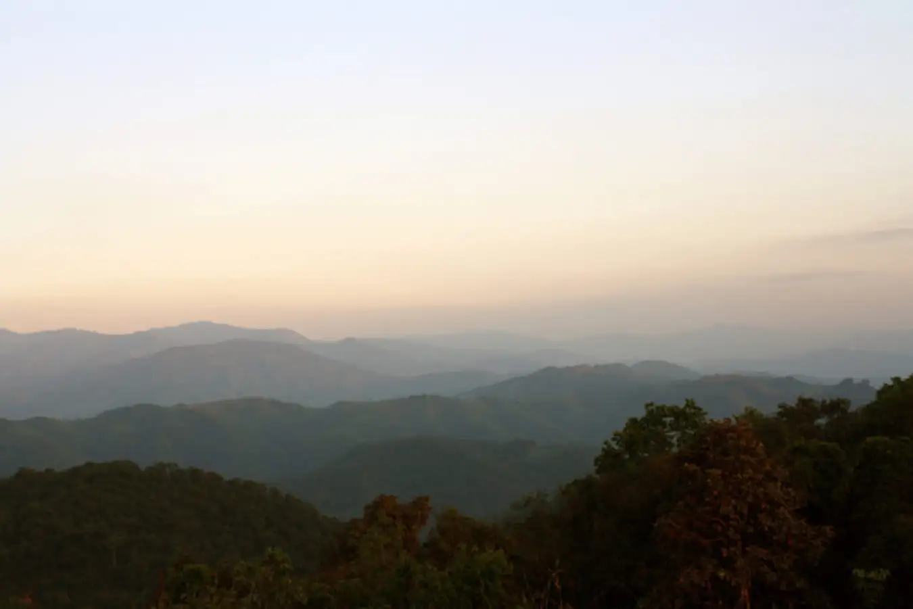 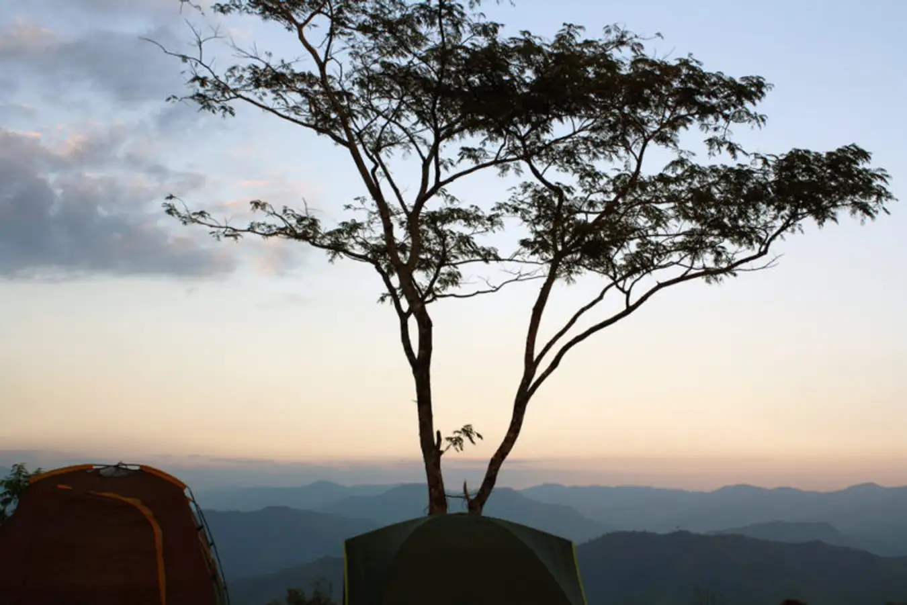จุดชมวิวทะเลหมอกที่สวยที่สุดอยู่ที่ม่อนกิ่วลม สามารถมองเห็นวิวได้ 180 องศา ไม่จุดชมวิวแต่ทั้งดอยแม่ระเมิงเองก็มีสถานที่ท่องเที่ยงเชิงธรรมชาติอีกหลายจุด ทั้งน้ำตกชาวดอยที่ให้แวะเล่นก่อนที่จะไปสัมผัสบรรยากาศและความสวยงามของทะเลหมอกบนกิ่วแม่ลม
9. ดอยผาชู้ จังหวัดน่าน
ยังอยู่กันที่จังหวัดน่านเพราะความเป็นเมืองแห่งขุนเขาไม่แปลกที่จะมีจุดให้ชมทะเลหมอกได้อย่างหลากหลาย ดอยผาชู้ตั้งอยู่บนพื้นที่อุทยานแห่งชาติศรีน่าน บนดอยมีพื้นที่สำหรับกางเต๊นท์และบ้านพักให้บริการ ทำให้คุณสามารถตื่นมาดูวิวทะเลหมอกยามเช้า ดื่มด่ำกับการมองเพราะอาทิตย์ขึ้น สัมผัสกับอากาศหนาวบนยอดดอย ใครที่ไปกับแฟนต้องฟินกันสุด ๆ
10. เนินช้างศึก จังหวัดกาญจนบุรี
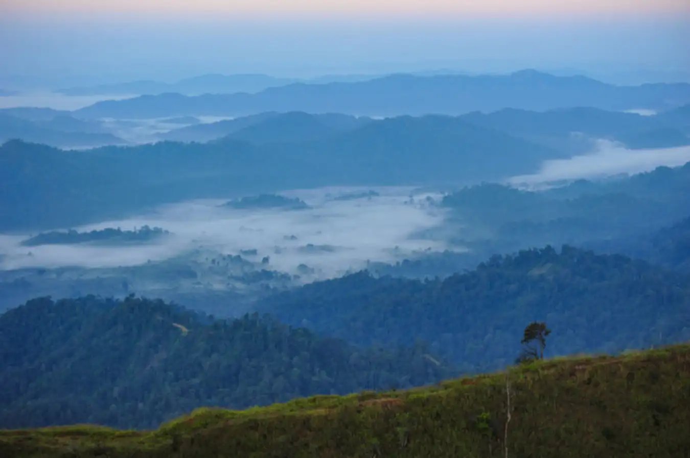 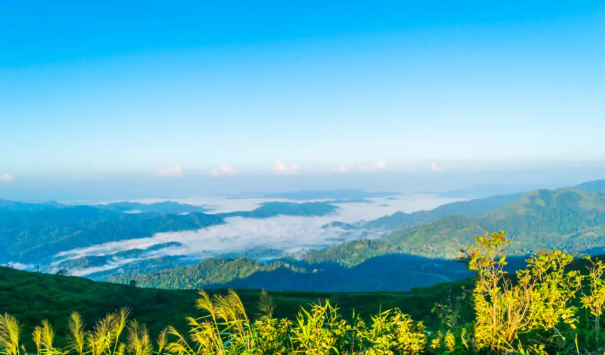ตั้งอยู่บนพื้นที่อุทยานแห่งชาติทองผาภูมิ เป็นจุดชมทะเลหมอกที่งดงามอีกแห่งหนึ่งของประเทศไทย โดยเป็นจุดที่สามารถมองเห็นทิวเขาในฝั่งประเทศพม่า บรรยากาศเย็นสบาย อีกหนึ่งไฮไลต์ของที่นี่คือวันไหนที่ฟ้าเปิดจะสามารถมองเห็นทะเลอันดามันฝั่งพม่าได้อีกด้วยเรียกได้ว่าเห็นได้ทั้งทะเลและภูเขาในที่เดียวเลย
และนี่คือสถานที่ไว้เที่ยวชมทะเลหมอกที่เราอยากจะมาแนะนำให้ทุกๆ คนบางทีก็ไปง่าย บางทีก็ต้องสมบุกสมบัน ผจญภัยกันบ้าง และถ้าใครที่วางแผนจะไปดูทะเลหมอกกันละก็ อย่าลืมจองที่พักกับ Traveloka ที่จะช่วยให้คุณได้ที่พักสุดพิเศษในราคาที่ถูกใจ มีส่วนลดให้ในทุกๆ ที่ให้สัมผัสอากาศหนาว สายหมอกและวิวสุดสวยอย่างสบายใจ สบายกระเป๋า
(form: https://www.traveloka.com/th-th/explore/destination/check-in-10-foggy-sea-for-winter/51556)